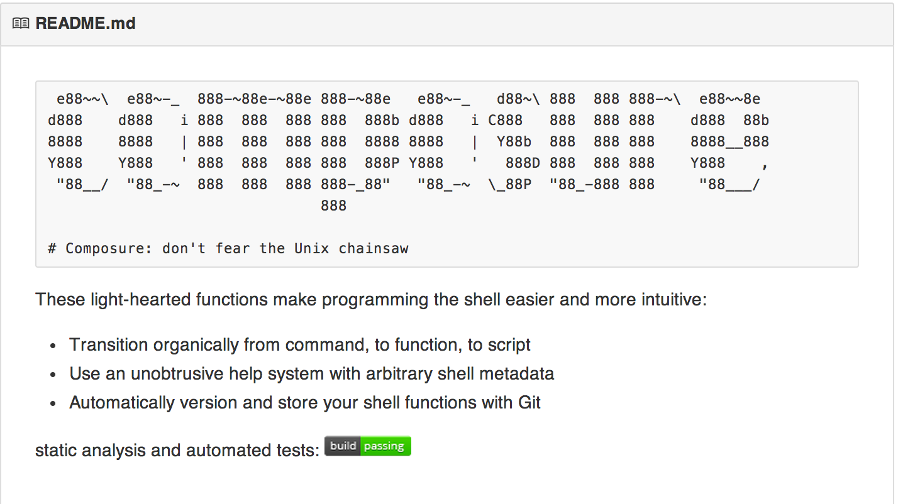

erichs.github.io
Stdout redirects to Stdin, rinse and repeat...
du -cks * | sort -rn | head
Unix's killer app!
$$\mbox{ terse syntax } + \mbox{ suppressed output } = wtf???$$
netstat -tn4 | awk '/ESTABLISHED/ {print $5}' | \
sed 's/:.*$//' | sort | uniq
How about:
unique_connected_hosts() {
netstat -tn4 | awk '/ESTABLISHED/ {print $5}' | \
sed 's/:.*$//' | sort | uniq
}
unique_connected_hosts() {
established_connections | strip_portnum | sort | uniq
}
established_connections() {
netstat -tn4 | awk '/ESTABLISHED/ {print $5}'
}
strip_portnum() {
sed 's/:.*$//'
}
draft from command line into text editor
write hundreds of small functions
persist across shell invocations
automatically versioned
organized, grouped and documented
easily share with team/others

$ source composure.sh
$ du -cks * | sort -rn | head
$ draft hogs
hogs() {
author 'Erich Smith'
about ''
example ''
group ''
du -cks * | sort -rn | head
}
hogs() {
author 'Erich Smith'
about 'Show top 10 disk hogs in current working dir'
example 'hogs'
group 'fs'
du -cks * | sort -rn | head
}
$ glossary
hogs Show top 10 disk hogs in current working dir
$ reference hogs
hogs Show top 10 disk hogs in current working dir
author: Erich Smith
examples:
hogs